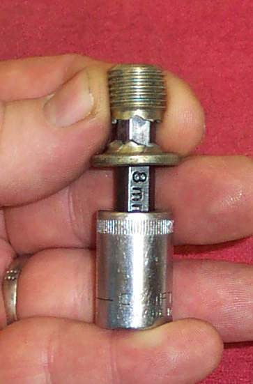
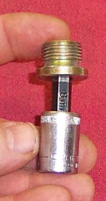

The bolt keeps turning and never gets tight. Oil seeps or runs past it. The thread in the engine casting, or on the bolt, has been pulled out, almost always from over-tightening.
Is it safe to ride?
No. The bolt can fall out and empty the engine of oil.
Quick checks first
- Is it the washer? A new washer in good condition seals a good thread. See Replace the drain plug sealing washer.
- Is the plug the correct size and pitch for the hole?
- Does the bolt turn freely for many turns, then spin?
Diagnose it step by step
1Fit a new washer and tighten to the manual torque. Does it seal and stop turning at the torque?
- Yes: it was only the washer. Done.
- No: go to step 2.
2Does the bolt spin without ever resisting?
- Yes: the thread in the engine is stripped. Many bikes do not have enough metal around the hole for a thread repair kit. Options are a slightly larger bolt, an expanding plug, or an insert from a workshop.
- No: go to step 3.
3Is the bolt thread damaged, or the head rounded?
- Yes: replace the plug. Match its size, pitch, length and head. See Drain plug and washer.
Causes, most likely first
| Cause | How to confirm | Fix |
|---|---|---|
| Worn or missing washer | Oil seeps at a normal torque | New washer |
| Over-tightened bolt thread | Bolt turns without tightening | New bolt |
| Stripped hole in the casting | Good bolt still spins | Larger bolt, plug or insert at a workshop |
| Weak Allen head plug | Socket rounded or broken | New plug of a stronger design |
Prevent this with a torque wrench. See Tighten drain and filter bolts without stripping them.